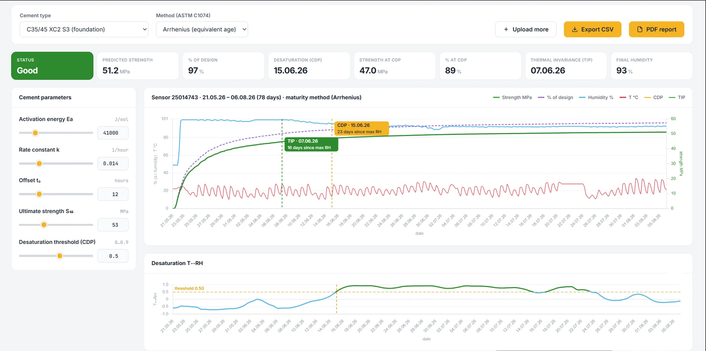

Concrete curing, maturity and drying
Measured from inside the pour.
Stripping, post-tensioning and flooring wait for the calendar, not for the concrete. A sensor cast into the fresh pour reports temperature and humidity from inside the slab for months, and the platform turns them into maturity, strength and drying status.

Why measure inside
Test cubes cure in a bath, not in the slab. Mass concrete in dams, tunnels and heavy foundations develops internal temperature differences that crack it; a slab dried too fast at the surface cracks too, while a slab stripped or loaded too early loses strength for good. Flooring laid over a slab that is still wet warps, debonds and moulds.
Maturity monitoring to ASTM C1074 and EN 13670 replaces waiting with measurement and saves days per cycle. Single-use maturity sensors cost several times more per point and are thrown away with the formwork; the SNTH stays in the structure and keeps reporting the drying for the years that follow.
How it works on site
The sensor is tied to the reinforcement or set into the fresh concrete at the depth you want to know about, or placed in a drilled hole in an existing slab. The gateway stands at the site edge with a 4G connection and, if needed, a solar panel. The first packets arrive within ten minutes; the 868 MHz radio passes through the reinforced slab.
In the platform the readings feed the equivalent-age maturity method (Arrhenius, ASTM C1074) with the parameters of your mix, giving an estimated strength at any moment, and a drying model that detects two points automatically. No wires, no cores, no climbing down to read a logger.
Two points the slab tells you itself
While the pores are saturated, the humidity signal moves against the daily temperature swing. As free water is used up, the two signals move together. The platform watches that phase relation and marks two points in the drying of every pour.
- Temperature-invariance point
- The humidity signal stops reacting to the daily temperature cycle: the pore structure has stabilised. In the 2026 field slab this came on day 16 after the maximum humidity.
- Desaturation point
- The slab leaves saturation and intensive hydration is practically complete. Reached on day 23 in the field slab, at an estimated 47.0 MPa, 89 % of the design strength, an objective criterion for stripping and loading.
- Strength from maturity
- Equivalent age by the Arrhenius method with the mix parameters, anchored to the measured temperature history. The estimate updates with every reading.
- Drying for flooring
- Relative humidity in the body of the slab, the quantity the flooring trade actually needs, logged until the floor goes down and after.
Field results: a C35/45 slab, 2026
A sensor was cast into the second floor slab of a residential building on 21 May 2026, in rain, at the moment the concrete was placed. It has reported from inside the slab since.
- 99 → 90 %
- relative humidity in the slab from saturation to the end of August
- 9.8–41.3 °C
- temperature inside the slab; 20 days above 35 °C in direct sun
- 97.5 %
- of design strength by the maturity estimate on 1 September, 51.7 of 53 MPa
- 82–103
- signal strength through the reinforced slab; battery constant at 3.05 V
The slab in the platform
Sensor 25014743 from 21 May to 6 August 2026: the humidity in the slab saturates after the pour and stays near 100 % until the desaturation point on 15 June, the temperature swings with every day, and the maturity model gives the estimated strength and the percentage of the design value. Both key points are marked automatically; the lower panel shows the temperature-to-humidity indicator crossing the 0.50 threshold.

Before the site, sensors spent 35 days under 1 cm and 2.5 cm of concrete in the laboratory: 100 % data availability, accuracy within 2 % before and after, IP68 and the 868 MHz signal through the concrete confirmed.
Where it is used
- Slabs and foundations: stripping and loading on measured strength
- Precast plants: curing control per element
- Mass concrete in dams, tunnels and heavy foundations: temperature differentials and alarms
- Post-tensioned structures: tensioning on maturity, not on the calendar
- Screed and slab drying before flooring (DIN 18560 readiness)
- Long-term moisture record of basements, tunnels and bridge decks
CureShift
The concrete models in the platform are developed under the CureShift name on the same sensor hardware. The method was taken from laboratory validation through outdoor test bodies to a live construction site in 2026 and reviewed with independent concrete engineers. Precast producers and contractors who want to validate it on their own mixes are welcome to run a pilot: a Demo Set and the first weeks of data are enough for a decision.
Put a sensor in your next pour.
A Demo Set with one gateway and three sensors covers a pilot on one element or one slab, delivered within ten working days and commissioned remotely. For a plant or a large pour we plan the positions with you.
- Phone
- +359 888 920 108
- info@sitech.consulting
- Office
- 66B Manastirski Livadi Street, 1404 Sofia, Bulgaria